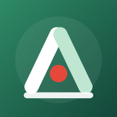

사회연대경제 창립·운영 내비게이터

함께 세우고, 오래 가는 조직 — 창립 D-day부터 매년의 운영까지
협동조합 · 사회적협동조합 · 사회적기업 · 마을기업 · 자활기업
같이세움을 만든 곳 · 소생커뮤니티 일손덜기
일손덜기는 소규모 사업자·단체의 반복 업무를 앱으로 덜어 드리는 소생커뮤니티의 업무 자동화 앱 제작 서비스입니다. 조합·단체가 매번 손으로 하던 일을 쓰기 쉬운 앱으로 만들어 드립니다.
이런 현장에서 작은 앱이 쓰입니다 (예시)
신청은 카카오톡 채널로 받습니다. 어떤 일을 줄일 수 있는지 궁금하다면 먼저 업무진단도구로 반복 업무를 체크해 보세요. 필요한 앱은 상담에서 함께 정합니다. 설립 실무 교육과 창립총회 동행 컨설팅도 함께 안내해 드립니다.
함께하는 후원 기관
광명시 사회연대경제혁신센터 마주(MAJU)
카페·스토어·교육·소통 공간에서 사회연대경제기업의 제품과 이야기를 만나는 곳. 2026년 9월 30일 문을 열었습니다.
후원 방식·원칙 보기 · 후원·제휴 문의는 소생커뮤니티 홈페이지로 해 주세요. 후원 기관은 같이세움의 내용과 안내에 관여하지 않습니다.